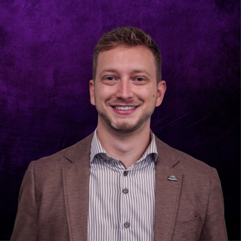
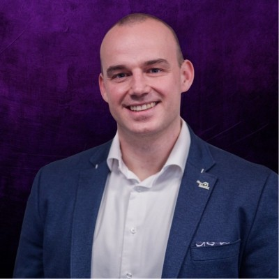
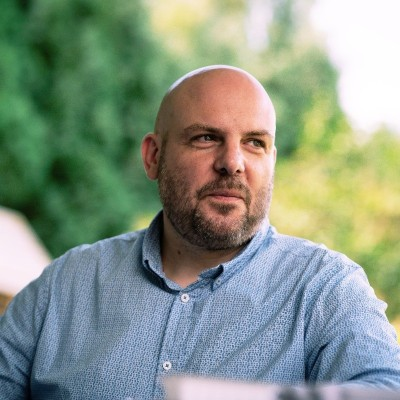

About
Grassroots security,
made in Limburg
BSides Limburg is a volunteer-run, non-profit conference for everyone who breaks, builds and defends: from students to CISOs.
What is BSides?
Security BSides started in 2009 in Las Vegas, when a group of speakers whose talks were turned down at a large conference (for lack of room, not quality) organised their own event next door. The idea stuck: a community-driven framework for security events, organised by and for local communities.
Since then it has grown into a global network of more than a thousand events in over 300 cities and 70 countries. Every BSides is independent and run by volunteers, but they share the same DNA: an open call for papers, affordable access and a strong focus on conversation and participation.
Why Limburg?
Limburg has a growing tech and security scene, with universities, colleges, startups and companies that deserve a stage close to home. BSides Limburg gives local talent a place to speak for the first time, and brings national and international speakers to Hasselt.
Our first edition took place in 2025 at Corda Campus. In 2026 we added a free reverse-engineering workshop with BlackHoodie for women and gender-diverse participants. The 2027 edition takes place on 12 March 2027.
The logo
Our logo tells the story of the province: the Celtic warrior Ambiorix of the Eburones, the headframe of the Limburg coal mines, the rolling hills and the apple and pear orchards of Haspengouw, all under the red arc that ties BSides chapters together. The colours? Black, yellow and red: very Belgian.
Our principles
- Community first. We use the word participants, not attendees: everyone is part of it.
- Open and fair CFP. Talks are selected on content. Sponsors can't buy speaking slots.
- Non-profit. Ticket fees cover costs and reduce no-shows. Any surplus goes to the next edition and to charity.
- Safe and welcoming. Everyone follows our Code of Conduct.
The team
BSides Limburg is organised by a small crew of volunteers from the Limburg security community.
-

Hendrik NobenResilixLinkedIn -

Stephan Van DyckResilixLinkedIn -

Tim ThaensMicrosoftLinkedIn -
Anthony StulensFreelanceLinkedIn
Get involved
BSides Limburg exists because people give their time. You can help as a speaker, volunteer on the day, sponsor, or by simply bringing a colleague along.